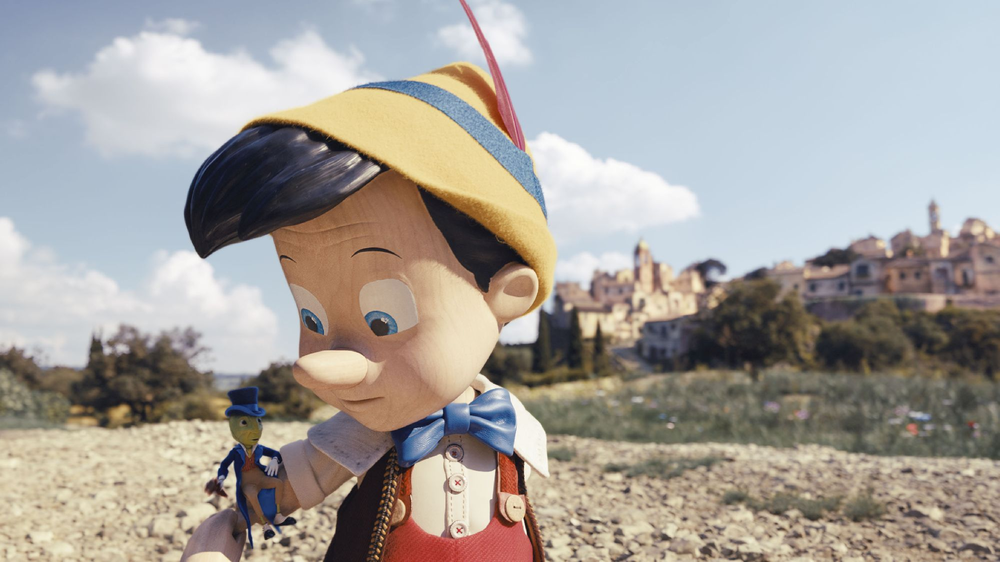

“Pinocho” una película sin alma
Crítica de “Pinocho” (2022), mucho CGI intentando ser una película de verdad
Pinocho es uno de los personajes de ficción con más adaptaciones al teatro, la misma literatura, la
televisión y, por supuesto, el cine; tan solo en los últimos tres años hemos tenido cuatro películas
(dos live-action y dos en animación) del muñeco de madera más famoso de la historia. Una de esas
cuatro es el nuevo remake de Disney dirigido por el ganador del Oscar Robert Zemeckis (“Forrest
Gump”), protagonizada por Tom Hanks (“Elvis”), Cynthia Erivo (“Widows”), Luke Evans (“La Bella y la
Bestia”) y con el joven actor Benjamin Evan Ainsworth como la voz de la marioneta buscando ser un
niño de verdad. ¿Es buena o solamente busca capitalizar sobre la nostalgia como muchos de los
últimos remakes de la compañía?
Empecemos diciendo que la película no busca ser una nueva adaptación del famoso libro escrito por
Carlos Collodi en 1883 (así de vieja es esta historia), sino más bien se trata de una “adaptación”
de la película animada producida por Walt Disney en 1940. Dicho eso, y si hoy aún existe alguien
para quien la historia le resulte ajena, la película nos cuenta las aventuras de Pinocho, una
marioneta de madera traída a la vida mediante la magia del Hada Azul (Erivo) para cumplir el deseo
de Geppetto (Hanks), un viejo y solitario carpintero cuya esposa e hijo han muerto, sin embargo,
para poder convertirse en un niño de verdad, primero debe aprender las diferencias entre el bien y
el mal, ser bueno, honesto y generoso, tareas nada fáciles. Para esto lo acompaña Pepe Grillo (voz
de Joseph Gordon-Levitt), un grillo quien sirve de su conciencia De esta forma seguimos a Pinocho y
su pequeño grillo mientras se enfrentan a distintas pruebas con tal de demostrar el buen corazón
dentro del niño de madera.
La película de 1940 es una obra maestra de la animación y una de las cintas animadas más importantes
de todos los tiempos debido a sus avances en cuestiones técnicas como la animación del agua, el
fuego y las sombras de los personajes. Además ganó el Oscar a Mejor Canción Original por “When You
Wish Upon a Star” (la cual se convirtió en la fanfarria del logotipo de Walt Disney Pictures y la
escuchamos al inicio de todas las películas del estudio). Pese a esto, el remake comandado por
Zemeckis carece completamente de la magia de la cinta original, de las emociones transmitidas por
sus personajes o de la complejidad de la animación; en cambio se transforma en un festival de
personajes y escenarios en CGI que intentan replicar algo de esa esencia.

Todos los actores involucrados son buenos en su trabajo y cantan correctamente las canciones, sin
embargo hay muchas decisiones cuestionables: Tom Hanks, por ejemplo, trata de imitar los movimientos
y los gestos del Geppetto animado, algo completamente innecesario pues esta es una versión
live-action; Cynthia Erivo entrega una interpretación interesante y sus escenas deberían haber sido
algunas de las más emotivas de la cinta pero todo queda arruinado por el terrible trabajo de efectos
visuales alrededor de ella y un mal manejo de la cámara, lo cual me lleva a otro gran problema
dentro de la cinta: Robert Zemeckis no sabe cómo introducir a sus personajes. Lejos quedaron
aquellas magníficas escenas de presentación de personajes como el Doc Brown, Marty Mcfly, Jessica
Rabbit o el Teniente Dan. Aquí el director no genera ninguna expectativa, los personajes aparecen en
la pantalla sin ningún tipo de reparo en su importancia o peso sobre la historia; ni siquiera lo
logra con el mismo Pinocho, con el cual intenta jugar tapándolo de nuestra vista con el cuerpo del
carpintero para luego revelarlo en un plano simple y sin chiste; lo mismo puede decirse del Hada
Azul, Geppetto, Pepe Grillo y Stromboli (el malvado titiritero).
La película original es muy famosa porque da bastante miedo en muchas de sus secuencias: el show de
marionetas de Stromboli, la aparición del Zorro y el Gato, la ballena y, sobre todo, la brutal
escena en donde los niños son transformados en burros. En “Pinocho” de 2022 todo esto es tratado sin
un mínimo de respeto: no hay secuencias atemorizantes, el score original (Alan Silvestri,
colaborador frecuente de Zemeckis) nunca destaca, la excepción son las escenas con las canciones de
la película de 1940. Asimismo, muchas escenas son arruinadas por el cargado uso de efectos visuales,
algunos incluso recuerdan a las escenas de “El Expreso Polar” diseñadas para verse en 3D . Ni
siquiera Pinocho, cuando es una marioneta y Geppetto está haciéndolo bailar por medio del sistema de
cuerdas, luce real.
“Pinocho” es una película sin alma. El estudio no se arriesga ni un poco en su realización, misma
que demuestra la decadencia de un director como Robert Zemeckis quien ya está lejos de aquel
creativo innovador de los años 80. Disney tomó un cadáver, le ató hilos en las extremidades y lo
puso a bailar frente a la cámara para seguir capitalizando con él. Eso hacen sus remakes: copian
absolutamente todo de las originales (sin siquiera acreditar a los creativos de aquellas viejas
producciones) y creen que los efectos especiales, los brillitos y actores queridos por el público
van a eclipsar su ambición corporativa.
Luis Servin